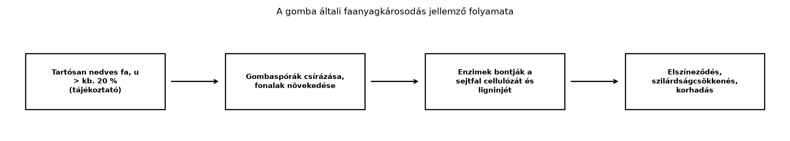

A műhelybe friss, szépnek tűnő fűrészáru érkezik. A deszkák felületén
szürkéskék foltok vannak, de a szaga dohos. Két hét múlva a gyalult
felület alatt szivacsos, puha részeket találsz. Egy megrendelő régi
szekrényének hátfala a fal felől porlik, apró kerek lyukak és finom
lisztes por látszik rajta. Ha nem tudod felismerni, mi támadta meg a
fát, akkor hibás anyagot építesz be, vagy a felújított bútor hamar
tönkremegy. Ebben az alfejezetben megismered a fa leggyakoribb biológiai
károsítóit: a farontó gombákat és a farontó
rovarokat, hogy időben felismerd a kártételt, és tudjad, mikor
kell faanyagvédő szert vagy szerkezeti megoldást választani.
5.2.2 Szemléletes kép
Képzelj el egy nedves pincefal mellett álló faládát. A deszka
felülete először csak sötétedik, kékesszürke foltok jelennek meg. Később
a rostok mentén apró repedések futnak, a fa barnássá, kockásan
töredezetté válik, ujjal benyomható. A másik oldalon, egy meleg padláson
a gerendák felületén apró, kerek lyukak látszanak, alattuk finom,
világos por. A lyukakból friss rágcsálék pereg ki. Ez a két kép jól
mutatja a két károsítócsoport jellegzetes nyomait: a gombák elszínezik
és puhítják a fát, a rovarok járatokat rágnak.
Az alábbi folyamatábra a gombák által okozott károsodás jellemző
lépéseit mutatja.

A gomba általi faanyagkárosodás jellemző
folyamata - Tájékoztató folyamatábra: a folyamat gyorsasága, az egyes
fázisok anyag- és nedvességfüggőek (ellenőrizendő: szakirodalmi
adatok).
5.2.3 A gombák életfeltételei:
nedvesség, hőmérséklet, oxigén, tápanyag
Definíció. A farontó gombák olyan
élő szervezetek, amelyek a fa sejtfalanyagait (cellulózt, lignint) vagy
a sejtekben lévő tartalékanyagokat használják táplálékul, és ezzel
elszínezik, illetve roncsolják a faanyagot.
A gombák nem zöld növények, nem fotoszintetizálnak, hanem szerves
anyagot bontanak. A faiparban kárt okozó gombák növekedéséhez az alábbi
négy alapfeltételnek kell teljesülnie:
Tápanyag – a fa sejtfalanyaga vagy a sejtekben lévő
keményítő, cukor, fehérje.
Nedvesség – a fanedvességnek a gomba számára
elérhetőnek kell lennie. A fa víztartalma akkor elérhető a gomba
számára, ha az a rosttelítettségi határ közelében vagy fölötte van. Ez a
gyakorlatban azt jelenti: a gombakártétel általában akkor indul, ha a
fanedvesség tartósan 20% fölött van (tájékoztató érték,
fajtól függ, ellenőrizendő). Száraz, 12–16% nedvességtartalmú bútor- és
épületfa belsejében a gombák nem tudnak elszaporodni.
Megfelelő hőmérséklet – a legtöbb farontó gomba
5–35 °C között növekszik, az optimumuk sokszor 20–28 °C körül van
(tájékoztató irodalmi tartomány, ellenőrizendő). Fagyban a növekedés
leáll, magas hőmérsékleten (40–50 °C fölött) a hifák elpusztulhatnak.
Ezért a fűtetlen, nyirkos pince és a meleg, párás tetőtér egyaránt
kedvező lehet.
Oxigén – a legtöbb korhasztó gomba aerob, tehát
oxigént igényel. A vízzel teljesen telített, levegőtől elzárt fa
ritkábban korhad, de például a lágykorhadás bizonyos
fajai oxigénszegény környezetben is károsíthatnak (ellenőrizendő).
Szabály. A faanyag károsodásának megelőzésében a
legfontosabb a nedvességtartalom és a hőmérséklet szabályozása, valamint
a fa gyors kiszárítása a kivágás után. A beépítésre, felhasználásra
kerülő faanyag nedvességtartalmát ezért mérjük és tartjuk a
felhasználási helynek megfelelő egyensúlyi értéken (lásd A faanyag nedvességtartalma: mérés és számítás
alfejezet).
5.2.4 Elszínező gombák: kékülés és
penész
Definíció. Az elszínező gombák
olyan gombák, amelyek a fa felületén vagy a szijácsban növekednek, de a
sejtfalat érdemben nem bontják; fő káruk a szín, néha a szag és a
felületi minőség romlása.
Kékülés (kékfoltosság). A szijácsot sötétkék,
szürkéskék, esetenként fekete foltok vagy csíkok festik el. A kékülést
okozó gombák (például a Ceratocystis, Ophiostoma,
Cladosporium nemzetség fajai – ellenőrizendő) a sejtekben lévő
keményítővel és cukorral táplálkoznak. A fa szilárdsága általában közel
változatlan, de a kékült anyag bútoripari felületnek nem alkalmas,
árkedvezményes vagy csak takart helyre való.
Penészfoltok. A fa felületén bársonyos, porszerű,
színes (zöld, fekete, fehér, sárgás) bevonat. A penészek nem bontják a
faanyagot, de a magas páratartalom jelzői, egészségügyi és esztétikai
kockázatot jelentenek, és a felületkezelést rontják (a bevonat nem
tapad, a penész átüthet a festéken). A penész a felület csiszolása előtt
mindig megszüntetendő.
Figyelem. Penészes vagy gombás fa bontásánál,
csiszolásánál a spórák a levegőbe kerülnek. Dolgozz elszívással, jól
szellőztetett helyen, FFP2/FFP3 részecskeszűrős légzésvédőben,
védőkesztyűben és védőszemüvegben (ellenőrizendő: munkavédelmi előírás).
A penészes felületet előbb nedvesen tisztítsd/fertőtlenítsd, csak utána
csiszold. Fertőtlenítő és faanyagvédő szert csak a biztonsági adatlap
(CLP-jelölés, egyéni védőeszköz) szerint használj; a hulladékot
veszélyes hulladékként kezeld.
Megjegyzés. A kékült deszkát gyakran összetévesztik
a korhadttal. A vizsgálathoz vágd ferdén a fát, vagy gyaluld le a
felszínt. Ha a rostok alatta világosak, kemények, szilánkosak, akkor
elsősorban elszíneződés; ha szivacsos, kenhető, sötétbarna, akkor
korhadás.
5.2.5 Korhasztó gombák: barna,
fehér és puha korhadás
Definíció. A korhasztó gombák olyan
gombák, amelyek a fa sejtfalanyagát bontják, és ezzel a fa tömegét,
sűrűségét és szilárdságát csökkentik.
A korhadás típusai:
Barna korhadás (barna rothadás). Elsősorban a
cellulózt bontja, a lignin megmarad, ezért a fa sötétbarna színű lesz,
megrepedezik a rostokra merőlegesen, és jellemzően kockásan
töredezik. A száradó fa összezsugorodik, porlékony. Nagyon
veszélyes, mert már kis tömegveszteség esetén is jelentős
szilárdságcsökkenés léphet fel. Gyakori épületfában.
Fehér korhadás (fehér rothadás). A lignin
válogatott módon lebomlik, a visszamaradó cellulóz világos, fehéres,
rostos szerkezetet ad. A fa puhává, szivacsossá, olykor rostosan
szétválóvá válik. Lombos fákban gyakoribb.
Puha (lágy) korhadás. A sejtfal felszíne puhul fel,
főleg tartósan nedves, rosszul szellőző környezetben (vízzel érintkező,
földdel fedett részek). A felület sötétszürke, puha, nyálkás, de a
mélyebb rétegek sokáig kemények maradhatnak. Lassú folyamat, de
alattomos.
Szabály. A korhadást mindig meg kell különböztetni
az egyszerű nedvesedéstől. A korhadt fa szilárdsága csökkent, ezért
teherviselő szerkezetben vagy bútor vázában nem maradhat; a fertőzött
részt el kell távolítani, és a nedvességforrást meg kell szüntetni.
5.2.6 Házigomba az épületfában
Definíció. A házigomba (gyakran a
Serpula lacrymans, régebbi nevén Merulius lacrymans –
ellenőrizendő) olyan, elsősorban épületfában előforduló barna korhasztó
gomba, amely a falazaton, vakolaton is képes fonalakat (micéliumot) és
vastag, pókhálószerű gombafonal kötegeket
növeszteni.
A házigomba különösen veszélyes, mert:
már viszonylag alacsonyabb fanedvességnél is aktív (kb. 20–25%
környékén, ellenőrizendő);
a fonalai nagy távolságra, a nedves fából a szárazabb fába is
eljutnak;
károsítja a beépített gerendákat, ajtótokokat, padlókat, faléceket,
és akár a vakolat alatt is terjed.
Figyelem. A házigombára utaló jelek: rozsdabarna,
pókhálószerű micélium a gerenda és a fal találkozásánál, kockásan
repedezett, barna fa, dohos szag. Ilyenkor nem elég csak kicserélni a
fát; a nedvesedés okát is meg kell szüntetni, a fertőzött falszakaszt
szakemberrel fertőtleníttetni, és a környező faanyagot átvizsgálni.
5.2.7 Állati károsítók:
rovarok
A faanyagot rovarlárvák károsítják: a kifejlett bogarak petét raknak
a fa repedéseibe, pórusaiba vagy a már meglévő járatokba, a kikelő
lárvák pedig éveken át rágnak a fában.
Definíció. A farontó rovarok olyan
rovarok (elsősorban bogarak), amelyek lárvái a faanyagot táplálkozás
közben járatokkal rongálják.
A gyakorlatban legfontosabb csoportjaik:
Kopogóbogarak (Anobium fajok, pl. a közönséges bútor- vagy
kopogóbogár – Anobium punctatum – ellenőrizendő). A
lárva világos, hajlott testű, a fa belsejében rág. A kirepülési nyílása
kerek, alig 1–2 mm átmérőjű. A rágcsaléka szemcsés,
orsó alakú ürülékszemcsékből áll. Bútorban, régi ajtókban, tetőfában
gyakori.
Cincérek (főleg a házicincér – Hylotrupes bajulus –
ellenőrizendő). A házicincér lárva főleg a tűlevelű faanyagot,
gyakran a szarufákat, tetőszerkezetet károsítja. A kirepülési nyílása
ovális, tipikusan 5–8 mm átmérőjű (ellenőrizendő). A rágcsálék durvább,
hengeres, gyakran sárgás. A lárva a fa felülete alatt hosszú, széles
járatokat rág, és a járatok fölött a vékony, épen maradó felületi réteg
felhólyagosodhat, hullámossá válhat.
Szúbogarak (pl. a közönséges szú – Xyleborus fajok
– ellenőrizendő). A szúk általában friss, nedves fában vagy a
tárolt rönkben készítenek járatokat; a kártételük a szijácsban keskeny,
elágazó járatokból áll. A kirepülési nyílásuk apró, gyakran a kéreg
felőli oldalon. A fűrészáru minősítésénél a szúrágás hiba.
Parkettabogarak (Lyctus fajok, falisztbogár –
ellenőrizendő). A parkettabogarak elsősorban
nagy keményítőtartalmú lombos fák szijácsát (tölgy, kőris, dió) és a
trópusi fákat károsítja. A rágcsálékuk lisztfinom, porszerű, a
kirepülési nyílás kerek, kb. 1–1,5 mm (ellenőrizendő), gyakran
csoportos. Parkettákban, furnéros bútorokban szokott előfordulni.
5.2.8 Kirepülési nyílás és
rágcsálék
Definíció. A kirepülési nyílás az a
lyuk, amelyen a kifejlett bogár elhagyja a fa felszínét. A
rágcsálék (vagy por) a lárva által
kirágott, a járatból kipergő, finom faőrlemény.
A kártétel frissességét erről ismered fel:
Friss kártétel: a nyílás élénk, világos színű,
gyakran látható a kifejlett rovar vagy a báb; a rágcsálék a nyílás alatt
friss, világos, nem porosodott.
Elöregedett kártétel: a nyílás széle sötét, kopott,
pókhálós, a rágcsálék összeállt, szennyezett. Ilyenkor a rovarok már
kikeltek, de a további petézés miatt a fa lehet továbbra is fertőzött,
ezért érdemes szakemberrel felméretni.
Figyelem. A kirepülési nyílás önmagában nem jelenti
a fertőzés végét, mert a járatok belsejében újabb nemzedékek
fejlődhetnek.
Statikus változat (mint a PDF-ben)
Farontó rovarok kirepülési nyílásai méretarányos rajzon
mm-skálával, rágcsalékuk, tipikus fafaj és hely, alatta a barna, fehér
és puha korhadás vázlata (a méretek tájékoztatók,
ellenőrizendők)
Az ábrán a kopogóbogár kerek, 1–2 mm-es nyílása és finom, lisztes
rágcsaléka, a házicincér ovális, nagyobb nyílása és durvább, hengeres
rágcsaléka, a parkettabogár apró, csoportos nyílásai és porszerű
rágcsaléka, valamint a szú kéreg felőli apró nyílásai láthatók; alul a
barna (kockásan töredező), a fehér (világos, rostos) és a puha
(felületen puhuló) korhadás képe. A HTML-változat lépésenkénti
határozója a nyílás alakjától a valószínű károsítóig vezet (a 4. feladat
esetére a házicincérig).
5.2.9 Számítási példák a
gombaveszélyes nedvességtartalom megítéléséhez
A gombák életfeltételeihez szorosan kapcsolódik a fanedvesség mérése.
A nedvességtartalom képletét a A faanyag
nedvességtartalma: mérés és számítás alfejezetben tanultad, itt a
kártétel megítéléséhez gyakoroljuk.
Példa. Egy tárolt deszka nedves tömege
,
abszolút száraz tömege
.
Mekkora a nedvességtartalom, és eléri-e a gombaveszélyes tartományt?
A 33%-os fanedvesség jóval a 20% fölött van, tehát ha tartósan így
marad, a gombák számára kedvező.
Példa. Egy fűrészárut 100 g tömegű mintából
szárítanak; a szárítás után a minta tömege 84 g. Mekkora a
nedvességtartalom, és kockázatos-e a tárolás?
Ez a 20% közelében van, tehát éppen a határzónában; tartósan ilyen
nedvesség mellett a penész és a kékülés megindulhat, a korhadás még
lassú, de a tárolást szellőztetéssel és méréssel kell ellenőrizni. ∎
Továbbvitt eredmény. A gomba- és rovarkártétel
kialakulásának feltételei (főleg a tartósan 20% fölötti fanedvesség, a
20–28 °C körüli optimális hőmérséklet, az oxigén és a tápanyag),
valamint a kártétel felismerésének jegyei közvetlenül felhasználják a Faanyagvédelem: szerkezeti és vegyi védelem
alfejezetben: ott az a cél, hogy ezeket a feltételeket megszüntessük
vagy a fát vegyi védelemmel ellenállóvá tegyük.
5.2.10 Kártétel felismerése a
beszerzett anyagon és a felújítandó bútorban
Beszerzett fűrészárun:
Nézd meg a deszkák végét és széleit: kékülés, penész, szúrágás
nyomai.
Ütögesd a fát: a korhadt rész tompa, dobos hangú.
Próbáld meg benyomni a szijácsot éles szerszámmal: ha könnyen
süpped, gyanús.
Keresd a friss rágcsálékot a kirepülési nyílások alatt, és a rovarok
jelenlétét.
Nedvességmérés: villamos ellenállás-mérővel vagy
szárítószekrényes mintavétellel (tájékoztató tűrés: ±1–2% a kézi műszer
pontossága, ellenőrizendő).
Mi a teendő eltérésnél?
Kékült, penészes, de szilárd fa: kékülés esetén takart helyen
felhasználható, penész esetén a felületet fertőtleníteni és szárítani
kell.
Bármilyen korhadás vagy élő rovarrágás esetén a károsodott részt el
kell távolítani; teherhordó szerkezetben szakemberrel vizsgálják
felül.
A kártétel okát (nedvességforrás, szellőzés hiánya) mindig meg kell
szüntetni, különben a károsodás visszatér.
5.2.12 Tipikus hibák és okaik
A kékülést korhadásnak nézik. A kékült, de kemény
fa szilárd lehet; a korhadt fa puha. Hiba lenne a kékült anyagot
tűzifának minősíteni vagy a korhadtat szilárdnak hinni. Helyes:
gyalulj egy felületet, és vizsgáld a rostot.
A penészt csak lecsiszolják. A penészgombák a fa
felületén maradnak, és a magas pára miatt visszatérnek. Helyes:
előbb szüntesd meg a nedvességforrást, szellőztess, szükség esetén
fertőtleníts, és csak utána csiszolj – légzésvédőben, kesztyűben,
szemvédőben, elszívással (lásd a Figyelem dobozt az elszínező
gombáknál).
A kirepülési nyílást régi, elöregedett kárnak hiszik, és nem
vizsgálják a friss rágcsálékot. A poros, sötét szélű lyuk lehet
inaktív, de a friss, világos por élő fertőzésre utal. Helyes:
rendszeresen töröld le a gyanús felületet, és figyeld, pereg-e új
por.
A korhadt fát egyszerűen kicserélik, de a nedvesedés okát
nem szüntetik meg. Az új fa hamar ugyanúgy károsodik.
Helyes: a szerkezeti hibát (beázás, páralecsapódás,
talajnedvesség) orvosolni kell.
5.2.13 Valós életbeli
alkalmazás
Valós eset. Egy régi bérházban a beépített szekrény
hátfala a nedves falsík mellett évekig állt. A tulajdonos észrevette,
hogy a hátlap sötét, penészes, a széle felpuhult, és a felső sarkoknál
apró lyukak jelentek meg porral. Először csak átfestette olajfestékkel,
de a foltok fél év múlva újra átütöttek.
Az asztalos a bútort kibontotta, és azt találta, hogy a hátfal
mögött, a szellőzetlen résben a hideg külső fal mellett a pára
lecsapódott, és a falsík tartósan nedves volt. A bútorlap hátoldalán
házigomba micélium és kockás repedés látszott, a felső
sarkokban a kopogóbogár kirepülési nyílásai és friss
rágcsálék volt. A szerkezet teherhordó része nem károsodott, de a hátfal
és a szélső polctartó léc korhadt.
A javítás lépései a következők voltak:
A szekrényt kiürítették, a károsodott hátfalat és a korhadt léceket
eltávolították.
A nedvesség okát építőipari szakember feltárta és megszüntette (pl.
falszigetelés, hőhíd megszüntetése); a házigombás falszakaszt szakcég
kezelte (micéliumeltávolítás, falfertőtlenítés a fertőzés környezetében
is – ellenőrizendő: szakcégi technológia).
A megmaradt, egészséges faanyagot faanyagvédő szerrel kezelték (a
biztonsági adatlap szerint, légzésvédőben, kesztyűben és szemvédőben;
ellenőrizendő).
Új hátfalat és léceket építettek be, és a szekrény és a fal között
legalább 30–50 mm szellőzőrést hagytak (tájékoztató).
A tanulság: a felület kezelése önmagában nem elég; mindig a
nedvességforrást és a károsítók életfeltételeit kell megszüntetni. ∎
5.2.14 Önellenőrzés
Igaz vagy hamis? A kékülés a fa sejtfalát bontja, ezért a kékült fa
mindig korhadt.
Melyik hőmérséklet- és nedvességtartomány kedvez a legtöbb farontó
gomba növekedésének?
Sorold fel a barna korhadás jellegzetes jeleit.
Mi a különbség a kopogóbogár és a házicincér kirepülési nyílása
között?
Hogyan állapítod meg, hogy a rovarrágás friss-e?
Egy deszka nedves tömege 0,58 kg, száraz tömege 0,47 kg. Veszélyes-e
a nedvességtartalma a gombák számára?
5.2.15 Feladatok
1. feladat (A). Definiáld a farontó gombák és a
farontó rovarok fogalmát, és írd le a gombák életfeltételeit.
2. feladat (A). Egy gerenda nedves tömege 15,4 kg,
abszolút száraz tömege 12,8 kg. Számold ki a nedvességtartalmat, és
döntsd el, gombaveszélyes-e.
3. feladat (B). Egy beszerzett tölgyfa pallón
szürkéskék foltok vannak, de a felület kemény, gyalulás után alatta
világos a fa. Élő rovarrágásra utaló jeleket nem látsz. Mi lehet a
károsodás, és milyen felhasználást javasolsz?
4. feladat (B). Egy régi fenyőfa ajtótok alsó részén
ovális, 6–8 mm-es kirepülési nyílásokat és durva, hengeres rágcsálékot
találsz. Melyik károsítóra utalnak a jelek? Fogalmazd meg a vizsgálati
lépéseket annak eldöntésére, hogy a fertőzés aktív-e.
5. feladat (C). Egy ügyfél penészes, dohos
szekrényhátfalat szeretne csak lecsiszolni és átfesteni. Magyarázd el,
miért nem elég, és milyen vizsgálati sorrendet javasolsz.
6. feladat (D). Készíts ellenőrzőlistát egy használt
tömörfa asztal vásárlásakor a farontó gombák és rovarok jeleinek
felkutatására. Add meg, melyik jelet hol keresed, és mi a teendő, ha
találsz.
5.2.16 Megoldások
5.2.16.1 Önellenőrzés –
válaszok
Hamis. A kékülés elszínezi a fát, de a sejtfalat érdemben nem
bontja; a korhadás viszont roncsolja a sejtfalat.
A legtöbb farontó gomba 5–35 °C között nő, optimuma 20–28 °C; a
fanedvesség tartósan 20% fölött kedvező.
Sötétbarna szín, a rostokra merőleges repedések, kockás töredezés,
porlékonyság, szilárdságcsökkenés.
A kopogóbogár nyílása kerek, 1–2 mm; a házicincéré ovális, 5–8 mm
(ellenőrizendő méret).
Friss, ha a nyílás széle világos, a rágcsálék friss, nem poros, és a
felület letörlése után új por pereg ki.
,
tehát a 20% fölött van, gombaveszélyes tartomány.
5.2.16.2 1. feladat (A)
Farontó gombák: a fa sejtfalanyagát vagy
tartalékanyagait fogyasztó, faanyagot elszínező vagy roncsoló gombák.
Farontó rovarok: lárváikkal a fában járatokat rágó
rovarok. Gombák életfeltételei: tápanyag (faanyag), nedvesség (tartósan
20% fölött), hőmérséklet (5–35 °C, optimum 20–28 °C), oxigén (legtöbb
faj aerob).
5.2.16.3 2. feladat (A)
A nedvességtartalom 20,3%, ami éppen a gombák számára már elérhető
tartomány határán van. Tartós ilyen nedvesség mellett a penész és a
kékülés megindulhat; a gerendát szárítani vagy szellőztetni kell.
5.2.16.4 3. feladat (B)
A szürkéskék foltok és a kemény, világos belső felület
kékülésre utal, nem korhadásra. A fa szilárdsága közel
változatlan. Javasolt felhasználás: takart szerkezeti, belsőépítészeti
vagy festett felület, árkedvezményes minőségben; bútorlappá, látható
felületre ne válaszd.
5.2.16.5 4. feladat (B)
Az ovális, 6–8 mm-es nyílás és a durva, hengeres rágcsálék a
házicincérre utal. Vizsgálati lépések:
A tok alsó részét, illesztéseit és repedéseit tüzetesen
átnézni.
A felületet letörölni, majd pár nap múlva ellenőrizni, pereg-e friss
rágcsálék.
Két-három helyen hegyes szerszámmal finoman benyomni a fát, keresve
a felület alatti járatokat.
Nedvességtartalmat mérni.
Ha friss rágcsálékot találsz, a fertőzött részt el kell távolítani,
és faanyagvédő szerrel vagy szakember által javasolt módon kezelni.
5.2.16.6 5. feladat (C)
A penész a magas páratartalom jelzője. Ha csak lecsiszoljuk és
átfestjük, a penészgombák spórái a nedves faanyagban és a felületi réteg
alatt túlélnek, és a bevonat hamar felválik. Először meg kell
állapítani, miért nedves a hátfal (falszivárgás, páralecsapódás). A
nedvességforrást meg kell szüntetni, a penészes felületet megfelelő
szerrel fertőtleníteni (a biztonsági adatlap és az egyéni védőeszközök
szerint), száradás után a károsodott anyagot cserélni vagy újra
felületkezelni.
Fiókfenék, hátlap belső oldala: penész,
elszíneződés.
Nedvességmérővel: minden gyanús ponton mérés.
Ha bármilyen jelet találok, jelzem a felmérésben, a károsodott
alkatrészt kicserélem, a többit megelőző védőkezeléssel látom el, és a
vásárlást a kezelési költséggel kalkulálom.
5.2.17 Rövid összefoglaló
A farontó gombák a faanyagot akkor támadják meg, ha a fanedvesség
tartósan 20% fölött van, a hőmérséklet 5–35 °C, optimum jellemzően 20–28
°C, és oxigén is jelen van. Az elszínező gombák
(kékülés, penész) a fa színét rontják, de a sejtfalat általában nem
bontják. A korhasztó gombák a sejtfalanyagot
roncsolják: a barna korhadás sötétbarna, kockásan
repedezett, a fehér korhadás világos, rostosan széteső,
a puha korhadás felületileg nyálkásan puhul. Az
épületfában a házigomba különösen veszélyes, mert
fonalai a falon át is terjedhetnek. A farontó rovarok közül leggyakoribb
a kopogóbogár (kerek, kis nyílás), a
házicincér (ovális, nagyobb nyílás, durvább rágcsálék),
a szúbogarak és a parkettabogarak
(Lyctus fajok). A friss kártételt élénk szélű kirepülési nyílás és
frissen pergő rágcsálék jelzi. A kártétel megelőzésének alapja a
nedvességtartalom csökkentése és a jó szellőzés. Továbbvitt
eredmény: ezen életfeltételek megszüntetésére épül a
faanyagvédelem (szerkezeti és vegyi), amelyet a Faanyagvédelem: szerkezeti és vegyi védelem
alfejezet tárgyal, és ezeket az ismereteket használjuk a fűrészáru
tárolásánál és a kültéri szerkezetek kialakításánál.
5.2.18 Források és ellenőrzési
hiányok
Felhasznált forrástípusok: faanyagvédelmi szakkönyvek, faanatómiai
és mikrobiológiai tankönyvi leírások, farontó rovarok határozói
(általános, nem ellenőrzött internetes források).
Ellenőrizendő: a gombafajok latin nevei, a hőmérsékleti optimumok
pontos tartománya, a kirepülési nyílások méretadatai, a faanyagvédelmi
szabványok aktuális jelzete (pl. MSZ EN 335, 350, 351 – ellenőrizendő),
valamint a kémiai védőszerek engedélyezett hatóanyagai és felhasználási
korlátai.